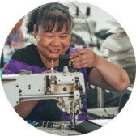

Unsere Produktionsstätte
QUANZHOU, FUJIAN PROVINCE, CHINA
Unsere Produktionskette ist lang und hinter jedem einzelnen Produkt steckt die Arbeit vieler Menschen. Unsere Lieferanten und Hersteller sind unsere Partner und als solche behandeln wir sie auch.
Das heißt vor allem, dass wir eine Geschäftsbeziehung aufbauen, die auf Vertrauen und Respekt basiert. Nachhaltigkeit beginnt für uns bei den Menschen, die sich für GOT BAG engagieren. Wir setzen auf transparente Kommunikation, sowie faire Arbeits- und Produktionsbedingungen.
Unsere Wertschöpfungskette
Indonesien ist zwar als eines der weltweiten Epizentren der Plastikvermüllung bekannt, aber auch das nur weil wir alle einen Teil dazu beitragen, dass der Müll dorthin verschifft wird.
-
Meeresplastik wird von unserem Netzwerk aus mittlerweile 1500 Fischern an der Nordküste Javas als Beifang gesammelt. Das Plastik aus ihren Netzen, wird gereinigt und sortiert.
-
Nach der Reinigung wird der PET-Anteil in Pellets zerschreddert. Die verbliebenen Reste werden über die entsprechende Wertschöpfungskette entsorgt.
-

Von der Sammelstelle in Indonesien werden die Pellets durch die regionale Nähe via Schiff zu unserer Produktion in Quangzhou in China gebracht. Dort wird aus den Plastikpellets ein hochwertiges Polyester-Garn hergestellt.
-
Aus dem Garn entsteht das Gewebe, das zur Herstellung deines GOT BAG verwendet wird. Für einen emissionsarmen Versand, wählen wir Züge als Transportmittel nach Europa und arbeiten an einer klimafreien Versandoption.